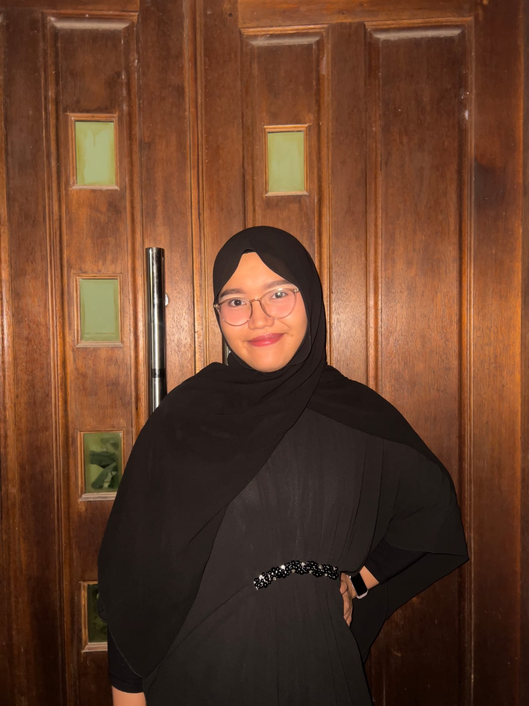

— Tentang Saya

Saya adalah mahasiswi S1 Ilmu Komputer di Universitas Lampung yang memiliki minat kuat di bidang UI/UX Design. Ketertarikan terhadap desain antarmuka tumbuh dari kesadaran bahwa teknologi yang baik harus dapat diakses dan dipahami oleh semua orang.
Berfokus pada perancangan pengalaman pengguna yang intuitif, mulai dari riset pengguna, pembuatan wireframe, hingga prototipe interaktif. Setiap keputusan desain selalu didasarkan pada kebutuhan pengguna dan prinsip-prinsip desain yang terukur.
Di luar aktivitas akademik, aktif mengeksplorasi tren desain terkini. Di waktu senggang, saya menikmati musik dari Reality Club dan Rex Orange County, serta memiliki ketertarikan pada kuliner — khususnya dimsum — dan buah melon sebagai camilan favorit.
Universitas Lampung
SMA NEGERI 10 Bandar Lampung